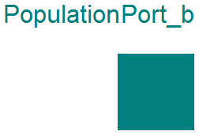
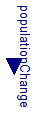
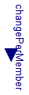

Extends from Modelica.Icons.InterfacesPackage (Icon for packages containing interfaces).
| Name | Description |
|---|---|
| PopulationPort | Average number of population members and their change |
| PopulationPort_a | Increase (or decrease) of population |
| PopulationPort_b | Decrease (or increase) of population |
| OnePort | Partial change of population beween two ports without its accumulation |
| Input of population change vs. parametric constant change | |
| Input of population change per one population member vs. parametric lifetime |
Average number of population members and their change
| Type | Name | Description |
|---|---|---|
| Population | population | Average number of population individuals [1] |
| flow PopulationChange | change | Average population change = change of population individuals [1/s] |
2014
Marek Matejak, Charles University, Prague, Czech Republic
Increase (or decrease) of population
Connector with one flow signal of type Real.
Extends from PopulationPort (Average number of population members and their change).
| Type | Name | Description |
|---|---|---|
| Population | population | Average number of population individuals [1] |
| flow PopulationChange | change | Average population change = change of population individuals [1/s] |
2014
Marek Matejak, Charles University, Prague, Czech Republic
Decrease (or increase) of population

Connector with one flow signal of type Real.
Extends from PopulationPort (Average number of population members and their change).
| Type | Name | Description |
|---|---|---|
| Population | population | Average number of population individuals [1] |
| flow PopulationChange | change | Average population change = change of population individuals [1/s] |
2014
Marek Matejak, Charles University, Prague, Czech Republic
Partial change of population beween two ports without its accumulation

| Type | Name | Description |
|---|---|---|
| PopulationPort_b | port_b | |
| PopulationPort_a | port_a |
Input of population change vs. parametric constant change

| Type | Name | Default | Description |
|---|---|---|---|
| PopulationChange | PopulationChange | 0 | Population change if useChangeInput=false [1/s] |
| External inputs/outputs | |||
| Boolean | useChangeInput | false | =true, if real input connector is used instead of parameter PopulationChange |
| Type | Name | Description |
|---|---|---|
| input PopulationChangeInput | populationChange | [1/s] |
Input of population change per one population member vs. parametric lifetime

| Type | Name | Default | Description |
|---|---|---|---|
| Time | LifeTime | 1e-8 | Mean life time for population (=1.44*halftime) if useChangePerMember=false [s] |
| External inputs/outputs | |||
| Boolean | useChangePerMemberInput | false | =true, if real input connector is used instead of parameter LifeTime |
| Type | Name | Description |
|---|---|---|
| input PopulationChangePerMemberInput | changePerMember | [1/s] |